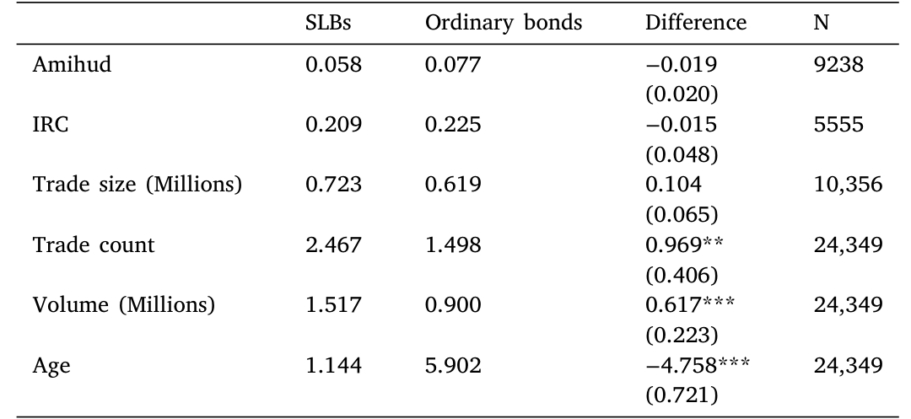
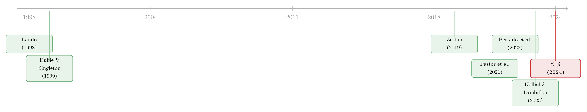

1.9 个基点的良心：可持续挂钩债券到底定价对了没有
本文读的是 Feldhütter, Halskov & Krebbers (2024, JFE)：他们把每一只可持续挂钩债券 (sustainability-linked bond, SLB) 拆成「一只普通债 + 一份 ESG 期权」，发现投资者愿意为「绿色标签」本身只让出 1–2 个基点的收益（作者称之为 sustainium）；更关键的是，SLB 的价格强烈依赖于未达标罚金的大小、且显著低于罚金现值之和——也就是说，这个市场是有效的，没有「定价错乱」的套利，更没有发行人靠 SLB 系统性地「漂绿」。顺带，他们还算出企业把 ESG 目标定得「太软」：平均有 61%–86% 的概率会达标。
1 一个被怀疑的市场
先说一个让人不太舒服的事实。
过去几年，全球企业一窝蜂地发行了一种叫做「可持续挂钩债券」(sustainability-linked bond, SLB) 的东西。它的结构很巧妙：企业不限制募来的钱怎么花，但把债券的现金流和一个未来的 ESG 目标绑在一起——比如「到 2025 年把碳排放降 21%」。如果到期没达标，债券的票息（coupon）就自动跳升（step-up），通常是 25 个基点。表面上看，这是个漂亮的激励机制：发了债之后，企业仍然有真金白银的理由去减排。
但市场里弥漫着一股不信任。2021 年一份针对专业投资者的调查里，他们对 SLB 最大的担忧是四个字：「漂绿风险」(greenwashing)。逻辑是这样的：如果企业把目标定得唾手可得，再发一只「看起来很绿」的债，投资者愿意为这层标签多付钱（pay a sustainium），那企业就等于无本万利地收割了一笔——它根本没打算认真减排。更糟的是，Kölbel and Lambillon (2023) 给出了一个看上去坐实了怀疑的证据：他们发现 SLB 的溢价比罚金现值之和还要大。如果属实，这意味着投资者在为根本不会兑现的现金流付钱，市场被系统性地定错了价。
于是问题就摆在桌上了：SLB 市场到底是被漂绿者操纵的「智商税」，还是一个能正确给 ESG 风险定价的有效市场？
这篇论文的全部张力，就在这一个问题上。而要回答它，作者必须先解决一件听起来枯燥、实则要命的技术活：怎么把一只 SLB 的价格，干净地拆开。
2 关键的一步：找一只「孪生」的普通债
要判断投资者为 ESG 标签付了多少钱，你得先知道同样一只债、如果没有 ESG 标签会值多少钱。这就是整篇文章方法论的命门。
作者的做法是构造一个 SLB 的价格溢价（SLB price premium）：
$$\text{SLB price premium} = \text{SLB bond price} - \text{ordinary bond price}$$
难点在于后者——「假如它是普通债」的价格，是观察不到的，得造出来。作者的办法很扎实：在二级市场上，每天给每一只 SLB 找两只同一发行人发行的、没有 ESG 标签的普通债，一只期限更短、一只更长，然后把它们的收益利差（yield spread）线性插值到与 SLB 完全相同的到期日，得到一个「合成普通债」的利差 \(s_{j,t}^o\)：
$$s_{j,t}^{o} = \frac{T_{L,t}-T_{j,t}}{T_{L,t}-T_{S,t}}\, s_{S,t} + \frac{T_{j,t}-T_{S,t}}{T_{L,t}-T_{S,t}}\, s_{L,t}$$
这一步为什么关键？因为它把 Kölbel and Lambillon (2023) 的噪声给摁住了。后者比的是 SLB 的发行时收益和同一发行人平均早一年半发行的普通债收益——中间隔着无风险利率的变化、宏观环境的变化、发行人信用的变化，全是噪声。而本文是「同一发行人、同一天、插值到同一到期日」的对照，把所有这些干扰一次性差掉了。
这正是「同一只债的两个价格」这类研究的精髓：你不是去估计一个绝对水平，而是构造一对几乎完全相同、只差一个特征的「孪生」证券，让那个特征的价格自己浮现出来。（公司债流动性差异会不会污染这个对照？作者专门比较了 SLB 与合成普通债的流动性，见下。）
那么这个「孪生对照」站不站得住？一个直接的威胁是：SLB 可能比它的合成普通债更不流动（或更流动），而流动性差异本身就会造成利差差异，被误读成 ESG 溢价。作者检查了两者的平均流动性，如表 6 所示，二者在流动性上相当接近——这让「价格差主要来自 ESG，而非流动性」的解释更可信。

Table 6: shows the average liquidity of SLB bonds and synthetic
3 把价格拆成「债 + 期权」：一个结构模型
有了干净的对照，接下来是这篇论文的理论骨架。作者用的是信用风险里的强度模型（intensity-based model），源头是 Lando (1998) 与 Duffie and Singleton (1999)。
设定是这样的：存在一个随机的无风险利率 \(r_t\)；企业以随机的违约强度（default intensity）\(\lambda_t\) 违约，违约时债权人拿回一个随机回收率（recovery rate）\(\delta_\tau\)。除此之外，作者引入了这篇文章的灵魂变量——投资者持有一只 SLB 可能享有一种「便利」（convenience），即对绿色资产的非金钱偏好，记作 \(\omega\)，他们称之为 sustainium。企业设定 \(K\) 个未来 ESG 目标，每个目标对应一组「未达标才支付」的额外现金流 \(S_i^j\)。
在风险中性测度 \(Q\) 下，一只 SLB 的价格可以写成三块之和：
三个积木分别是：
$$D(r_0,\lambda_0,\omega_0,t) = E_0^{Q}\!\left[e^{-\int_0^{t}(r_s+\lambda_s-\omega_s)\,ds}\right]$$
$$F(r_0,\lambda_0,G_0,K,t,T) = E_0^{Q}\!\left[\mathbf{1}_{\{G_T>K\}}\,e^{-\int_0^{t}(r_s+\lambda_s)\,ds}\right]$$
$$R(r_0,\lambda_0,\omega_0,\delta_0,t) = E_0^{Q}\!\left[\int_0^{t}\delta_u\lambda_u\, e^{-\int_0^{u}(r_s+\lambda_s-\omega_s)\,ds}\,du\right]$$
这里有一个精微但要命的细节：注意惩罚现金流那一项 \(F\) 用的是 \(e^{-\int(r_s+\lambda_s)ds}\)，贴现里没有 \(\omega\)；而普通现金流 \(D\) 的贴现里有 \(\omega\)。换句话说，模型假设 ESG 投资者愿意为「正常的绿色现金流」付一层 sustainium 溢价，但不会为「企业减排失败才掏的罚金」也付这层溢价——毕竟那笔钱恰恰是企业没做好事的产物。这个不对称，正是整套定价逻辑能自洽的关键。
于是价格可以自然地分解成一只「纯 sustainium 债」加一份「ESG 期权」：
$$P_0^{SLB} = P_0^{SUS} + O_0$$
其中 \(P_0^{SUS}\) 是没有任何期权现金流、但带 sustainium 折价的债券价格，\(O_0\) 是那份「未达标才触发」的期权价值。这个分解是后面所有实证的脚手架：sustainium 管标签，期权管罚金，两者分开识别。
把利率、强度、回收率、sustainium 都设为常数后，三块积木有了漂亮的闭式解：
$$D(r,\lambda,\omega,t) = e^{-(r+\lambda-\omega)t}, \qquad R(r,\lambda,\omega,\delta,t) = \frac{\delta\lambda}{r+\lambda-\omega}\left(1-e^{-(r+\lambda-\omega)t}\right)$$
4 sustainium：标签本身只值 1.9 个基点
现在回到那个最尖锐的问题：投资者到底愿不愿意为「ESG 标签本身」付钱？
这件事其实很难直接测。因为一只典型的 SLB 同时含有两样东西——标签的非金钱满足感，和未达标时的额外现金流——你很难把二者剥开。但真正巧妙的一步在于：作者找到了一个子样本，它们的惩罚不是给债权人加票息，而是「向慈善机构捐款」或「购买碳抵消证书」（62 只这样的债）。
妙就妙在：这类债根本不会给债权人带来任何额外现金流——罚金是付给第三方的。所以如果这种 SLB 仍然比它的合成普通债贵，那这部分溢价就只能来自标签本身。结果：作者估出一个正的、但温和的 SLB 收益溢价，约 1.9 个基点（即 sustainium）。
1.9 bps 是个什么概念？它证明了「影响力投资」(impact investing) 是真实存在的——投资者确实在乎自己的钱能不能推动企业行动，并愿意为此让出一点点收益（关于绿色标签到底值多少钱，可参见《绿色溢价真的归零了吗？》；至于撤资/影响力投资能否真的改变世界，可参见《卖掉一只「脏」股票，真能改变世界吗？》）。但 1.9 bps 也温和到不足以让企业靠「卖标签」就发横财。这第一击，就已经动摇了漂绿叙事的根基。
5 反转：市场其实很清醒
接着，一个自然的问题是：那带「罚金现金流」的主流 SLB 呢？价格会不会乱？
这里出现了全文最重要的反转。作者发现两件事：
第一，SLB 的价格溢价与罚金大小强正相关。 罚金越大（未达标要多付的现金流之和越大），SLB 越贵。这听起来是废话，但它恰恰说明市场在按「基本金融理论」办事——期权值钱，是因为它的底层现金流值钱。市场没有在闭着眼睛给标签付钱，它在认真地给那份「未达标期权」定价。
第二，平均 SLB 溢价显著小于罚金现值之和。 这一刀直接砍向 Kölbel and Lambillon (2023)。如果像他们说的「溢价 > 罚金之和」，那就存在「漂绿套利」的空间：企业可以发一只被高估的 SLB，根本不打算达标，白赚一笔。但本文用更干净的同日对照发现，事实恰恰相反——溢价 < 罚金之和，满足「无套利」。换句话说，市场并没有给发行人留下系统性漂绿的口子。
那么投资者的担忧——「目标太软」——错了吗？没全错。作者去估了企业未达标的概率。他们利用 ICMA 的披露规范：很多发行人会公布 KPI 的历史值。于是作者假设 KPI 服从一个广义维纳过程（generalized Wiener process）：
$$dG_t^{j} = \mu_j\,dt + \sigma_j\,dW_t$$
用历史数据校准 \(\mu_j, \sigma_j\)，再算未来达标/未达标的概率。结论是：未达标概率平均只有 14%–39%（取决于假设），换言之，达标概率高达 61%–86%。在最宽松的假设下（即假设企业未来会延续历史减排轨迹），未达标概率只有 39%。
所以投资者「目标定得太软」的直觉是对的——这些 ESG 目标确实偏容易。但「市场因此被漂绿者收割」的推论是错的——市场清醒地知道这些目标软，于是把那份期权定得很便宜。软目标被价格如实反映了，而不是被掩盖了。这就是「市场有效」四个字的真正含义。
6 最后一层：SLB 是一种「对冲气候风险」的资产
故事还有一个意味深长的尾声。作者去估了 SLB 所携带的 ESG 风险溢价。
逻辑是这样的：SLB 的额外现金流（罚金）发生在「企业未达标」时。这跟宏观状态有什么关系？有两种相反的猜测。一种（Nordhaus, 1977 式）：经济过热时产出和排放都上升，企业更容易超标、SLB 更可能付罚金——这发生在「高消费」的好状态，于是 SLB 是「顺周期」的，应要求正的风险溢价。另一种（Bansal et al., 2019 式）：如果排放导致气候灾难、带来负向宏观冲击，那么在企业没减排的坏状态里 SLB 反而付钱——SLB 成了对冲气候风险的工具，应有负的风险溢价。
把 ESG 期权的真实概率测度 \(P\) 和风险中性测度 \(Q\) 一减，风险溢价就浮现出来：
$$\sum_{j=1}^{K}\sum_{i=1}^{N_j} S_i^{j}\left(E_0^{P}\!\left[\mathbf{1}_{\{G_T^{j}>K\}}\right] - E_0^{Q}\!\left[\mathbf{1}_{\{G_T^{j}>K\}}\right]\right) D'(r_0,\lambda_0,t_i^{j})$$
实证结果：平均风险溢价为负，且在多数设定下统计显著——证据偏向「SLB 是气候风险的对冲工具」这一边。不过作者很诚实：在 KPI 与温室气体排放直接挂钩的子样本里，这个负溢价的证据很弱。也就是说，那个负号未必真来自「负的气候变化风险溢价」，结论需要打个折扣。
7 文献脉络
这条研究的来路其实很清晰。
最底层是信用风险定价的两块基石：Lando (1998) 的 Cox 过程方法，和 Duffie and Singleton (1999) 的可违约债期限结构模型——它们提供了「用违约强度 \(\lambda\) 给债券现金流贴现」的整套语言。本文的定价模型几乎是直接站在它们肩上，只多加了一个 \(\omega\)（sustainium）和一组 ESG 期权现金流。
另一条线是 ESG/绿色资产定价。Zerbib (2019) 第一个干净地量出了绿色债券的「greenium」（标签溢价）；Pastor et al. (2021) 和 Pedersen et al. (2021) 给出了「ESG 投资者存在时均衡价格长什么样」的理论框架；Feldhütter and Pedersen (2024) 则把这套逻辑推进到资本结构（关于 ESG 资金到底「倾斜」了多少，可参见《三万五千亿美元的 ESG，到底「倾斜」了多少？》）。

而真正的「对手戏」，是 Berrada et al. (2022) 和 Kölbel and Lambillon (2023)。前者给了 SLB 一个理论框架（企业努力 vs. 罚金大小）；后者做了第一个 SLB 定价实证，并抛出「溢价 > 罚金」的惊人结论。本文的位置，就是站在 Kölbel and Lambillon (2023) 的对面：用更干净的同日同发行人对照，把那个结论翻了过来，并补上了一整套模型、sustainium 估计、达标概率和风险溢价的分析。
8 评论与延伸（Q&A + 研究方向）
(a) 几个可能的疑问
Q：sustainium（1.9 bps）和绿色债券的 greenium 是一回事吗？
不完全是。绿色债券的 greenium 来自「募集资金被锁定用于绿色项目」，是资产层面的绑定；SLB 不限制资金用途，它的 sustainium 纯粹来自「标签 + 激励企业未来行动」的非金钱满足。作者正是因为 SLB 不绑定具体资产，才需要单独证明它仍有标签溢价——并用「捐款/碳抵消」子样本干净地分离出了这 1.9 bps。
Q：为什么本文敢说自己比 Kölbel and Lambillon (2023) 更可信？
核心是对照组的构造。后者比的是「SLB 发行收益 vs. 平均早 1.5 年发行的普通债收益」，中间夹着利率、宏观、信用三重时间漂移；本文比的是「同一发行人、同一天、插值到同一到期」的二级市场利差。前者的「溢价 > 罚金」很可能是这些噪声制造的假象。
Q：达标概率 61%–86%，这算「目标太软」的铁证吗？
算一半。它确实说明目标偏容易（投资者的直觉对了）。但要注意这是用「历史 KPI 轨迹」外推出来的——General Mills 在 2019 年一年就减排 19.3%，2020 年却反弹 5.6%，KPI 波动很大。所以概率区间从 14% 到 39% 跨度不小，对 \(\mu_j,\sigma_j\) 的校准假设相当敏感。
Q：罚金那么小（General Mills 才占利息支出 0.52%，Enel 占 0.44%），这债还有意义吗？
作者自己也承认，当前罚金小到不太可能实质性改变企业的转型决策。但「定价是否有效」和「激励是否够强」是两个问题——本文回答的是前者：哪怕罚金小，市场也把它定准了。激励够不够，是 SLB 最优设计的问题，本文明确说不研究。
Q：「SLB 是气候风险对冲」这个结论靠得住吗？
要打折扣。平均风险溢价为负是稳健的，但在「KPI 直接挂钩温室气体排放」的子样本里证据很弱。这恰恰是最该出现「气候对冲」效应的地方却没出现，说明那个负号可能来自别的机制（比如发行人选择），而非真正的气候风险定价。
Q：这套方法能搬到别的 ESG 债券上吗？
原则上能，但依赖两个前提：一是同一发行人有足够多的普通债来插值（很多纯 SLB 发行人没有），二是 KPI 有可披露的历史值来校准过程。换成主权 SLB 或小发行人，对照组就难造了。
(b) 几个可能的研究问题与提案
1. SLB 的流动性溢价能否从 sustainium 里干净剥离？ - 【经济故事】本文用表 6 论证 SLB 与合成普通债流动性相当，但「标签」本身可能改变投资者结构（ESG 基金长期持有），从而内生地改变流动性。1.9 bps 里有多少其实是流动性，而非良心？ - 【可行性】中。需要 TRACE 级别的逐笔成交数据算 Amihud/Roll 等流动性指标，对 SLB 与同发行人普通债做配对回归。数据可得，难点在 SLB 二级市场成交稀疏、样本小。
2. 外资持有人是 SLB 需求的边际定价者吗？ - 【经济故事】欧洲发行了一半的 SLB，但买家是全球的。如果 sustainium 主要由 ESG 偏好强的欧洲投资者推动，那么一只 SLB 卖给谁，会改变它的标签溢价。这能把「非金钱偏好」的异质性直接钉到投资者类型上。 - 【可行性】中偏低。需要债券层面的持有人国别数据（如 ECB SHS 或 Morningstar 持仓），与 SLB 的 sustainium 估计匹配。识别上要处理「绿色投资者自选择进入特定 SLB」的内生性。
3. 罚金被触发后，SLB 价格如何重定价？ - 【经济故事】Enel 在 2024 年 4 月真的触发了 25 bps 罚金。这提供了一个天然的事件研究：罚金从「期权」变成「确定现金流」的瞬间，价格、sustainium、以及同发行人其他 SLB 的隐含达标概率如何跳变？这是对本文期权定价框架的一次外样本检验。 - 【可行性】高。事件清晰、日期明确，只需事件窗内的二级市场价格。样本是少数已触发的 SLB，可做小样本事件研究 + 对模型隐含概率的事前事后对比。
4. SLB 的存在会挤出还是补充同发行人的普通债流动性？ - 【经济故事】发行 SLB 可能把 ESG 投资者从普通债吸走，改变普通债的持有人结构与流动性——这会反过来污染本文赖以构造对照的「合成普通债」。把这层一般均衡效应量出来，既是对方法的稳健性检验，也是独立的市场结构问题。 - 【可行性】中。用发行人首次发 SLB 作为事件，DiD 比较其普通债在事件前后的流动性变化，对照从未发 SLB 的相似发行人。需要处理「发 SLB 的企业本身不随机」的选择问题。
9 我的判断与参考文献
贡献。 这篇论文最扎实的地方，是把一个被舆论先入为主地判了「漂绿」的市场，用一套干净的同日同发行人对照 + 结构模型，重新做了体检，并给出一个反直觉却可信的结论：市场是有效的。它对 Kölbel and Lambillon (2023) 的修正是教科书级的——同样的问题，更好的对照组，相反的答案。把价格拆成「sustainium + 期权」的分解，以及用捐款/碳抵消子样本干净识别标签溢价，都是漂亮的手艺。
对识别的担忧。 我有三点保留。其一，「合成普通债」的整套结论都吊在「同一发行人有可插值的普通债」这个前提上，这天然把样本偏向有成熟债务结构的大发行人，最可能漂绿的小发行人反而进不了样本——这是一种沉默的选择偏误。其二，达标概率对 KPI 过程的校准极其敏感（14%–39% 的区间已经说明问题），用历史轨迹外推未来减排，本身假设了「business-as-usual」，而 SLB 的全部意义恰恰是想打破 business-as-usual。其三，「气候对冲」的结论在最该成立的温室气体子样本里最弱，这个内部矛盾作者诚实地标了出来，但也提醒我们别把那个负号读得太重。
后续想看的。 我最想看的是 Enel 触发罚金这类真实事件上的外样本检验——模型隐含的达标概率，事后被现实验证了吗？以及，把外资/ESG 投资者的持仓接进来，看看那 1.9 bps 的 sustainium 究竟是「全市场的良心」，还是「某一类边际投资者的良心」。后者若成立，SLB 的定价就不只是 ESG 偏好的问题，而是需求曲线与持有人结构的问题了。
参考文献
Bansal, R., Kiku, D., Ochoa, M. (2019). Climate change risk. Working Paper.
Berrada, T., Engelhardt, L., Gibson, R., Krueger, P. (2022). The economics of sustainability-linked bonds. Working Paper.
Duffie, D., Singleton, K. J. (1999). Modeling term structures of defaultable bonds. Review of Financial Studies 12, 687–720.
Erlandsson, U., Mielnik, S. (2022). An option pricing approach for sustainability-linked bonds. Working Paper.
Feldhütter, P., Halskov, K., Krebbers, A. (2024). Pricing of sustainability-linked bonds. Journal of Financial Economics 162, 103944.
Feldhütter, P., Pedersen, L. H. (2024). Is capital structure irrelevant with ESG investors? Review of Financial Studies, forthcoming.
Kölbel, J. F., Lambillon, A.-P. (2023). Who pays for sustainability-linked bonds. Working Paper.
Lando, D. (1998). On Cox processes and credit-risky securities. Review of Derivatives Research 2, 99–120.
Nordhaus, W. D. (1977). Economic growth and climate: the carbon dioxide problem. American Economic Review 67, 341–346.
Pastor, L., Stambaugh, R. F., Taylor, L. A. (2021). Sustainable investing in equilibrium. Journal of Financial Economics 142, 550–571.
Pedersen, L. H., Fitzgibbons, S., Pomorski, L. (2021). Responsible investing: The ESG-efficient frontier. Journal of Financial Economics 142, 572–597.
Zerbib, O. D. (2019). The effect of pro-environmental preferences on bond prices: Evidence from green bonds. Journal of Banking & Finance 98, 39–60.